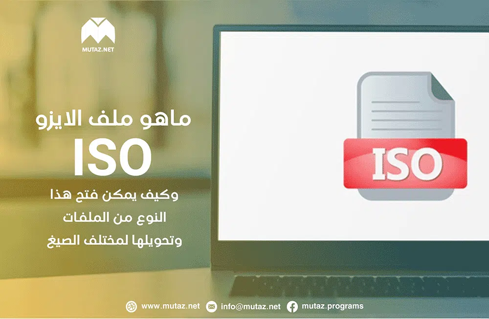

آخر ما نشر

على الرغم من أن جهاز الكمبيوتر المحمول العامل بنظام Windows يعمل بشكل ممتاز أثناء التنقل، إلا أنه يمكنك تحويله إلى محطة عمل مناسبة في المنزل أيضًا. من خلال توصيل لوحة المفاتيح والفأرة والشاشة الخارجية، يمكن للكمبيوتر المحمول العمل كجهاز سطح…
اقرأ المزيد...